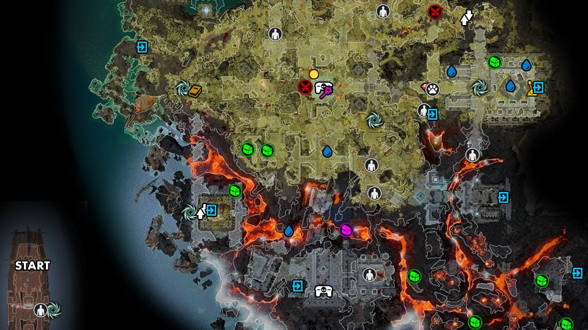

After arriving on the island, you will learn that the Black Ring, Paladins, and the Magisters are competing with each other on the island in a competition to see who will be able to ascend to Divinity. Your goal is to reach the Council and gain access to it.
If you saved Delorus at previously in Act I at Fort Joy, you will find him nearby and he will join your team and give you information on the Black Ring and Bishop Alexandar, has been reborn but reformed. You need to bring him to Alexandar to complete his quest, A Familiar Face. Alexandar is located at the elven forest in the northeast.